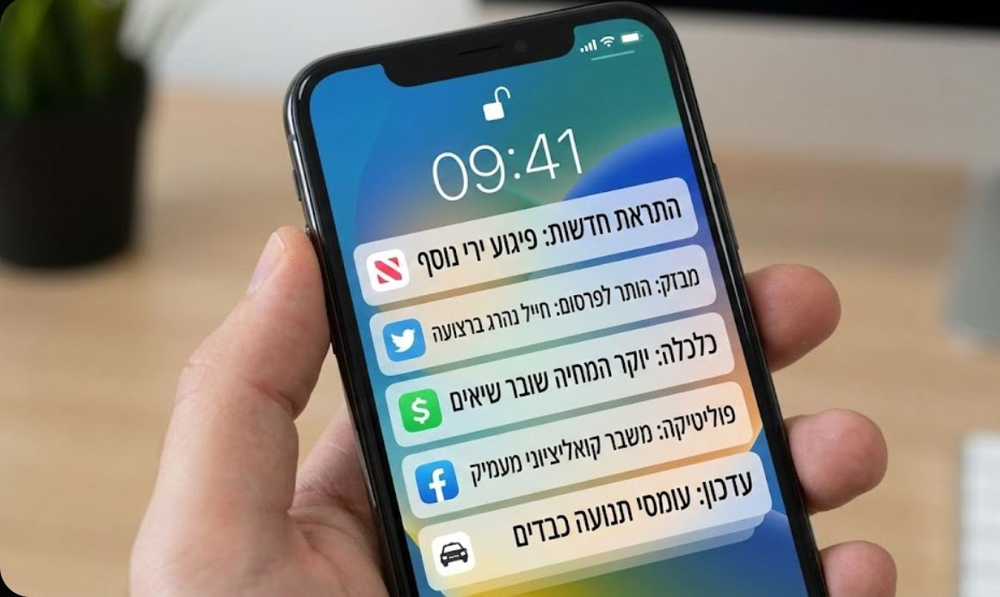
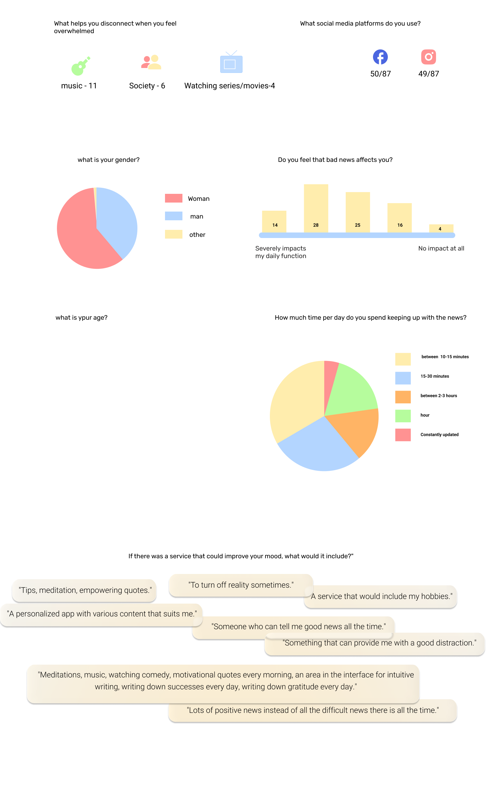
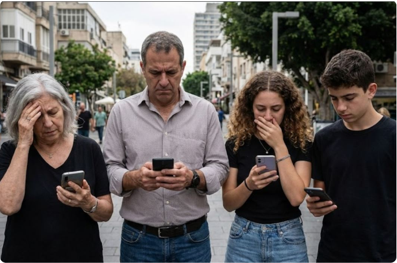
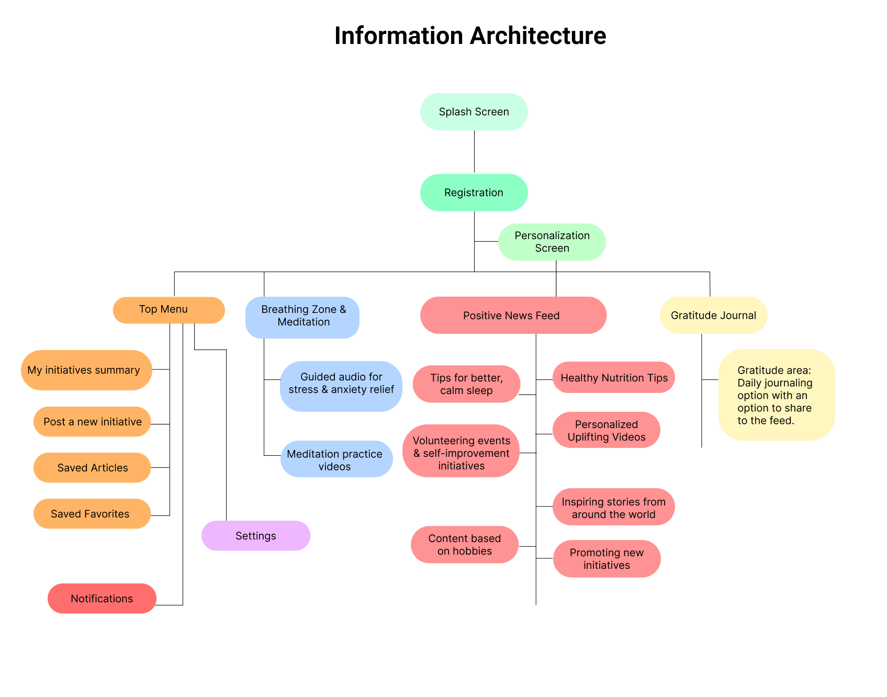
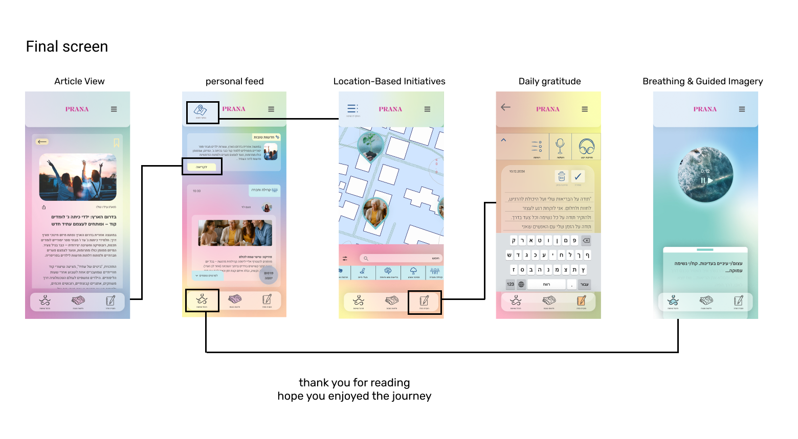
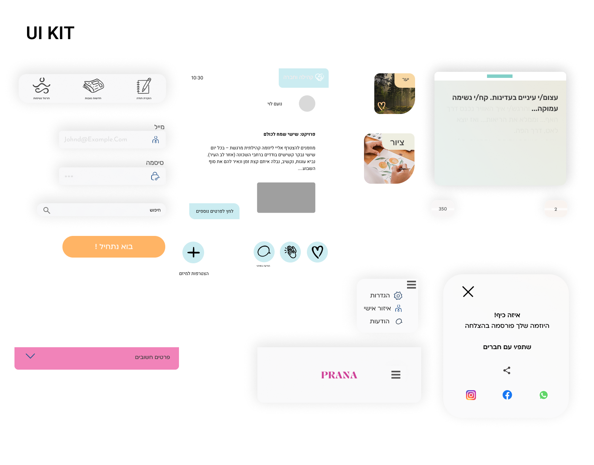

Prana: A Digital Sanctuary
How can design help us breathe easier?
About The Project
How can design help us breathe easier? Prana was created to combat the anxiety of "doomscrolling." It serves as a positive alternative to negative news, offering users a safe digital space for mindfulness, relaxation, and emotional balance.
The Problem

Constant exposure to breaking news and alarming headlines keeps people locked in a cycle of "doomscrolling" — compulsively refreshing feeds that mostly deliver bad news. Prana's research set out to understand how badly this affects people day to day, and what would actually help them disconnect.
Research
A survey was sent out to understand how people relate to the news, what helps them disconnect, and whether a calmer digital space could help.

Insights
We received ideas and inspiration for app features from the respondents. We observed similar interests among users and similar behavioral patterns during times of anxiety and stress, and decided to give them a prominent place in the app, such as the breathing zone and guided imagery.
"We drew inspiration for this feature's scrolling and post design from Instagram, while the reaction feature was inspired by Facebook. We wanted to provide users with an interface that feels as familiar and simple as possible."
"We wanted to provide a solution for people who are constantly exposed to news. Our goal was to offer an alternative that doesn't make them feel completely disconnected from the world, yet avoids centering on negativity and bad events."
Target Audience

- A diverse age range, starting from 12 years old.
- People who are emotionally affected by negative news.
- Mental health conscious individuals.
Personas

Maya, 22
Student. Seeking calming, inspiring content. She is looking for an escape to relax and is interested in a quiet, friendly community that feels gentle and supportive for the soul.

Noa, 31
Tech Team Lead. Deals with high levels of work stress. She is looking for efficient ways to unwind — practical, easy-to-apply solutions that help her find a moment of quiet during a busy day.
Ron, 48
Business Owner. Faces uncertainty and financial concerns. He seeks moments of respite between tasks and positive interactions that remind him of the good aspects of reality.
Origin of the Name PRANA
The most fundamental definition of Prana is 'Life Force' or 'Vital Energy'. It is not merely physical breath, but a subtler, cosmic energy considered to be the driving force behind all life functions. It flows through all living beings — humans, animals, and plants — and nourishes all of existence.
Information Architecture
After onboarding and a personalization screen, Prana splits into four pillars: a positive news feed, a breathing zone & meditation space, community initiatives, and a daily gratitude journal.

UI Design


Thank you for reading, hope you enjoyed the journey.